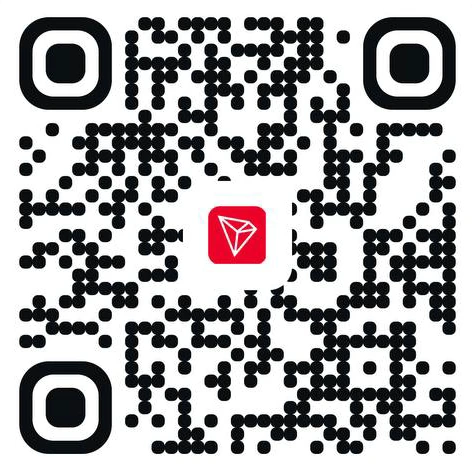

KBZ Pay
Verified · အတည်ပြုပြီး
Open KBZ Pay → Transfer → Phone number. Add a note like “DD BitePu tip” so I can say thank you.
Support the work Optional
If an app I built saved you time, a small tip keeps the next one shipping. Tips are never required. The apps stay free.
ကျွန်တော် ရေးထားတဲ့ app တစ်ခုက သင့်အချိန်လေး သက်သာစေခဲ့ရင် အသေးလေးတစ်ခုက နောက်ထပ် app အတွက် အားဖြစ်ပါတယ်။ မလှူလည်း ရပါတယ် — app တွေက အလကားပဲ ဆက်ရှိပါမယ်။
Inside Myanmar Fastest
Scan or send from the wallet you already use. Every wallet below is verified on my phone; if a number is still missing, treat that method as unavailable for now.
KBZ Pay
Verified · အတည်ပြုပြီး
Open KBZ Pay → Transfer → Phone number. Add a note like “DD BitePu tip” so I can say thank you.
Wave Pay
Verified · အတည်ပြုပြီး
Open Wave Pay → Transfer → Phone number, or scan the AYAR QR in the wallet app.
AYA Pay
Number pending · ဖုန်းနံပါတ် မတင်ရသေးပါ
Available in the AYA Pay app — the transfer number is not published here yet.
CB Pay
Number pending · ဖုန်းနံပါတ် မတင်ရသေးပါ
Available in the CB Pay app — the transfer number is not published here yet.
Citizens Pay
Number pending · ဖုန်းနံပါတ် မတင်ရသေးပါ
Available in the Citizens Pay app — the transfer number is not published here yet.
One QR, all wallets
AYAR QR photo pending
The AYAR QR from your wallet app scans at KBZ Pay, Wave Pay, AYA Pay, CB Pay and Citizens Pay. Until the photo lands here, use the transfer number in the app above.
Before you send · မပို့ခင်
Check the name shown by your wallet app before confirming. Wallet transfers cannot be reversed from my side, and I cannot refund a transfer sent to a wrong number.
မပို့ခင် သင့် wallet app မှာ ပြသတဲ့ နာမည်ကို သေချာစစ်ပါ။ မှားတဲ့ နံပါတ်ကို ပို့မိရင် ကျွန်တော်ဘက်က ပြန်လွှဲပေးလို့ မရပါဘူး။
If you prefer Crypto
One chain in front — USDT on TRON (TRC-20) — because that is what most people actually hold. Other networks are kept, just tucked away. One rule: check the network before you send.
Important · အရေးကြီးတာ
Crypto transfers cannot be reversed. If you send on the wrong network, or to a wrong address, the funds will not arrive: no one receives them, and they are usually unrecoverable.
Crypto ငွေလွှဲမှုတွေကို ပြန်ဖျက်လို့ မရပါဘူး။ မှားတဲ့ကွန်ရက်နဲ့ ပို့မိရင်၊ ဒါမှမဟုတ် လိပ်စာမှားရင် ငွေက ရောက်မလာပါဘူး — ဘယ်သူမှ လက်ခံမရဲ့အတွက် ပြန်ရဖို့လည်း မဖြစ်နိုင်သလောက် ပါပဲ။

TRON · TRC-20 · Recommended
One address for both — the wallet's Receive USDT and Receive TRX screens showed the same address.
Send USDT on the TRON network (TRC-20) only. USDT sent over Ethereum/ERC-20, BNB Chain/BEP-20 or Solana will not arrive. USDT ကို TRON (TRC-20) ကွန်ရက်ကနေပဲ ပို့ပါ။ ERC-20, BEP-20 ဒါမှမဟုတ် Solana ကနေ ပို့တဲ့ USDT က ရောက်မလာပါဘူး။
TRON address · TRON လိပ်စာ
••••••••••••••••••••••••
SOLANA
Native Solana wallet address.
Send SOL or SPL tokens on the Solana network only. Solana ကွန်ရက်ပေါ်က SOL နဲ့ SPL token တွေကိုပဲ ပို့ပါ။
Solana address · Solana လိပ်စာ
••••••••••••••••••••••••
CARDANO · MAINNET
Cardano mainnet address (addr1).
Send ADA on the Cardano mainnet only. Cardano mainnet ကနေပဲ ADA ပို့ပါ။
Cardano address · Cardano လိပ်စာ
••••••••••••••••••••••••
XRP LEDGER
XRP Ledger classic address.
Send XRP on the XRP Ledger to this classic address. No destination tag is published for this personal wallet — if your exchange asks for one, check before sending. XRP Ledger ကနေပဲ ဒီ classic address ထဲကို XRP ပို့ပါ။ ဒီကိုယ်ရေး wallet အတွက် destination tag မပါဝင်ပါ — exchange က တောင်းဆိုရင် မပို့ခင် သေချာစစ်ပါ။
XRP address · XRP လိပ်စာ
••••••••••••••••••••••••
I can't reverse or refund a mistaken transfer — check the network and every character of the address twice, and tip only what you can afford to lose. မှားလွှဲမိတာကို ပြန်ဖျက်လို့လည်း မရပါဘူး၊ ပြန်ရဖို့လည်း မဖြစ်နိုင်ပါဘူး — ကွန်ရက်နဲ့ လိပ်စာ စာလုံးတိုင်းကို နှစ်ခါစစ်ပေးပါ။ ပျောက်ဆုံးနိုင်တဲ့ ပမာဏလေးပဲ ပို့ပေးပါ။
The most useful thing you can do costs nothing: use the apps, report what is wrong, and tell one person who needs them.